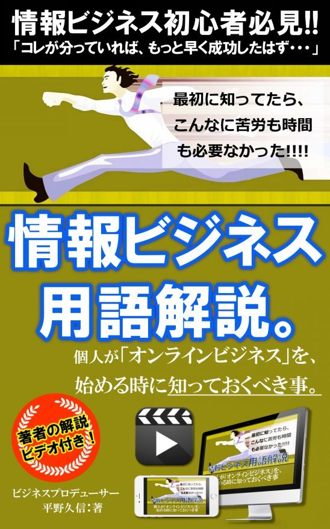

| 情報ビジネス用語解説。: 個人がオンラインビジネスを始める時に知っておくべき事 | |
| 平野久信 | |
| (2018) | |

はじめに。▶なぜこの用語集を作ろうと思ったのか？
初めまして。
ビジネスプロデューサーの平野久信（ひらのひさのぶ）ともうします。
まずは、本書を手にとってくれて本当に有難うございます。
最初にお伝えしたいこと、それは、
【本書にはビデオBOOK】の機能 がある。ということです。
本書の解説ビデオを視聴する方法（無料）は、「はじめにの終わり」と、「あとがきの終わり」に記載してあります。 文章ではなかなか伝えることが難しい、「解釈」の仕方や、「例え話」などについて深く知りたい方は、ぜひ、本書と合わせて「解説ビデオ」もご覧になってみて下さい。
きっと、本書との相乗効果が得られて、あなたのビジネスに役立つ、「現場の情報」をしっかりと届ける事ができると思っています。
さて、私は、個人のオンラインビジネスの立ち上げや、成長・拡大をプロデュースするコンサルティング業を生業にしております。
昨今、あまりにも多くの言葉が情報ビジネスの世界では駆け巡っています。
例えば、
・プロダクトローンチ
・ランディングページ
・アップセル、クロスセル
・DRM
・コンバージョン
・ターゲッティング
・USP、BtoC、ASP、などなどなど。
どんな業界でも、その業界特有の用語、業界用語ってものがありますよね。
当然、情報ビジネス業界、いわゆるネットビジネスの世界にも沢山あります。
そして、業界に新しく参入してきた人は、最初のうちは用語が全く分かりません。
それが、普通の実業のように、
「それどういう意味ですか？」と、
直接コミュニケーションが出来る気軽な環境があれば良いのですが、ネットビジネスの場合は基本的に、雇われる環境でビジネスを始めるのではなく、個人事業として業界に参入する人がほとんどです。
ですから、気軽に質問やコミュニケーションができる相手が近くにいる訳ではありません。要は、基本的には孤独なんです。
そうなると、いつまでの用語の意味や使い方が分からずに、マゴマゴして作業が進まなかったり、間違った作業や努力を気づかずに行ってしまいがち。ということがよくあります。
なので、そんな時には、本書「情報ビジネスまるっと！用語解説。」を参照して頂くと、その問題解決がスムーズに出来て、とても便利です。
また、用語というのは、英語の基本単語みたいなもので、最初によく使う言葉や言い回しを覚えておく事で、結果的に学ぶ期間が短くなり、新人でも早く現場人になれる、という効果もあります。
ぜひ、
・オンラインビジネスに興味を持ち始めている人、
・これから情報ビジネスを始めようと準備している人、
・ビジネスに挑戦はしているが思ったような結果が出ていない人、
などは、意外と疎かにしがちな、「情報ビジネスの業界用語」を学び直してみて、その意味や、使い方、解釈の違いを知るところを大事にされてみてはいかがでしょうか？
用語集とはいえ、ちゃんとしたコンテンツ（コンテンツって何？）ですから、しっかりと読み込んでおく事で、あなたのビジネスの飛躍に大きく貢献できる内容になっています。
もちろん、これだけでビジネスを行うのは100％十分。という訳ではありませんが、少なくともここで解説している用語を知って、意味を理解する事で、今まで以上に、ビジネスをスムーズに展開していける事に違いありません。
きっと、あなたの知らなかった用語や解釈もあると思いますよ。
それでは、続きの話は、本書の「用語解説：本編」と、著者の私自らがビデオで説明をした、「用語解説ビデオ」の中で、詳しく、分かりやすくお伝えして行きます。
あなたのビジネスが、益々発展していく事を心から願っております。
ビジネスプロデューサー平野久信（ひらのひさのぶ）
※本書の解説ビデオをすぐに視聴するには、こちら。
▶ http://glocalshare.com/link/jJPhgJ
【AIDAの法則】
アメリカのマーケターが考案した消費者行動のプロセス。
それぞれA(attention：注意)、I(interest：関心）、D(disire：欲求)、A(action：行動)の頭文字で、消費者が商品を知ってから購入に至るまでにこのような段階を踏むとされる。
【ASP】
(Affiliate Service Provider)の略。インターネットを中心に成功報酬型の
広告を配信するサービスの総称（例：インフォトップ）。
【BtoB】
(Business to Buisiness)の略。製造業者(メーカー)と卸売、または卸売りと小売間など、企業と企業の取引のこと
【BtoC】
(Business to Consumer)の略。企業から消費者向けの営業のこと
【CtoC】
（Consumer To Consumer）の略。「個人間取引」の訳で、一般消費者同士がインターネット上で契約や決済を行い、モノやサービスを売り買いすること
【DRM】※集客・教育・販売の流れ。
ダイレクト・レスポンス・マーケティング(Direct Response Marketing)の略。媒体やダイレクトメール、インターネット、電話など様々な方法でアプローチして、応募や請求、レスポンスなどの反応を獲得するマーケティング手法。
【LTV】
(Life Time Value)の略。「顧客生涯価値」と略され、顧客が生涯を通じて企業にもたらす利益のこと。
【PDCA】
(Plan・Do・Check・Action)の頭文字を並べたもの。「計画」→「実行」
→「評価」→「改善」を回すこと。
【PPC】
(Pay Per Click)の略。ウェブサイトなどに貼られた広告を閲覧者がクリックする毎に広告主は課金され、広告掲載者が報酬を得る仕組み
【SEO】
Search Engine Optimaization(検索エンジン最適化)の略。検索結果で、より上位に表示されるよう、WEBページに改良を加えること、またはその技術
【USP】
(Unique Selling Proposition)の略。「独自の売り・強み」のこと
【PV】
(Page View)の略。ウェブのアクセス数の単位。
【UU】
(Unique User)の略。Webサイトにおいて、あるページを何人の人物が閲覧したかの数値。同一人物が複数回訪問してもその数値は１のまま。
【アウトソーシング】外注、外部委託のこと
【アップセル（アップセリング）】
ある商品の購入を検討している(あるいは購入した)人に、より上位の商品を勧める販売手法
【クロスセル(クロスセリング)】
顧客に今売っている商品に加えて、さらに別の商品を売ること。セット販売
【アフィリエイト】
サイト（HP、ブログ、メルマガなど）運営者が自分のサイトに広告主の広告を掲載し、成果に応じて報酬を獲得できる広告システム
【アフィリエイター】アフィリエイトをする人のこと
【インフォプレナー】情報起業家(情報販売者)のこと
【インフルエンサー】世間に与える影響力が大きい行動を行う人物のこと
【ニーズ】消費者の顕在的な欲求(←→ウォンツ)
【ウォンツ】消費者の潜在的な欲求(←→ニーズ)
【オウンドメディア】
企業などが所有する情報の充実したウェブサイト
【オファー】
販売者が購入者に購入に関して提案する「条件」のこと
【オプトイン】
ユーザーの同意のもと、メールアドレスなどを取得したりすること
【オフライン】インターネットに繋がっていない状態のこと
【オンライン】インターネットに繋がっている状態のこと
【クロージング】顧客と契約を締結すること
【コンセプト】切り口、打ち出し方のこと（何を、誰に、どうやって）
【コンテンツ】情報の中身のこと。価値。
【コンバージョン】
(Conversion)新規注文や登録など、Webサイト上で獲得できる最終的な成果のこと。CVと略される
【コピーライティング】
広告文章を書く事、又はその技術のこと。「人間心理を深く理解して、言葉で読者の行動を変えること」、「読者を行動させるための技術」、「商品の魅力的に伝える文章術」、「商品を爆発的に売るためのスキル」などと認識される事が多い
【ザイオンス効果】
同じ人や物に接する回数が増えるほど、その対象に対して好印象を持つようになる効果のこと。
【シナジー】相乗効果のこと
【情報弱者】
ロクに自分の頭で考えようとせず、誰かを盲目的に信用したり、人に依存したがり、被害者意識が強く、自分の価値観に固執する人
【セグメント】
市場における不特定多数の人々を同じニーズや性質を持つグループに分けた物
【ターゲッティング】
ねらうべき市場のこと。例：40代の会社員で課長職以上の人、20代後半、独身の女性。など
【ダウンセル(ダウンセリング)】
購入に至らなかった見込み客に、グレードを下げた商品を販売すること。
「値下げ」と同義ではない
【ティーザー・ティージング】
商品を宣伝する際、その商品イメージやヒントだけを伝えること。じら
し
【テストマーケティング】
新製品発売の際にリスクを軽減するため地域や期間などを限定してその製品を試験販売し、消費者の反応を実験すること
【サーバーとドメイン】
サーバー（英語:server）とは、ホームページを表示するために必要となる情報を
格納しておく場所のこと。ドメインとは、ネット上の「住所」のこと（例：〇〇.com）
【バイラルマーケティング】
人の口から口へと伝わる「口コミ」になるような話題を投げて、低コストで顧客の獲得を図るマーケティング手法のこと
【バズ（る）】
人為的に人々の注目を集める仕掛けを作り、注意、関心を向けること
※本書の解説ビデオ： http://glocalshare.com/link/jJPhgJ
【フロントエンド】見込み客に最初に見せる商品のこと
【バックエンド】
フロントエンドの購入者に、さらに売り込みをかける商品
【バナー】
ウェブ上で他のウェブサイトを紹介する役割をもつ画像のこと
【ビッグデータ】
巨大かつ多種多様な情報の集積のこと
【付加価値】
その商品の基本的な価値以外に備わる価値(例：自動車の価値は「走ること」で付加価値は「快適性」「ビジュアル」など)
【フック（キャッチ）】
読み手の心をつなぎとめたり、興味関心をもってもらう仕掛けのこと
【ブランディング】
他には無い、かつ、そのもの「ならでは」の価値のこと。
【フリーミアム】
基本的なサービスや製品は無料で提供し、さらに高度な機能や特別な機能については料金を課金する仕組みのビジネスモデル
【ブルーオーシャン戦略】
競争のない「未開拓市場」でなかば独占的に販売をすること
(←→レッドオーシャン)
【ブレット(ボレット)】
(bullet)の日本語訳で、拳銃の弾丸。黒い丸印が弾丸が貫いた痕に見えることから転じて、ページ上にある箇条書きの箇所のこと。
【プロダクトアウト】
作り手や販売者という売り手の立場に立って、売り手が良いとするものを提供していこうとすること←→マーケットイン
【マーケットイン】
市場や購買者という買い手の立場に立って、買い手が必要とするものを提供していこうとすること←→プロダクトアウト
【プロダクトローンチ】
事前に徹底しした教育を行うことで、商品を爆発的に売る手法
【プロモーション】
消費者の購買意欲を喚起するための活動のこと
【ベネフィット】商品を手にすることで得られる本来の利益のこと
【ペルソナ】自分の商品にとっての理想の顧客像のこと
【ポジショニング】
ターゲットとなる顧客にとって「独自性」と「優位性」の両方を獲得す
ること
【マーケティング】
売れるための「仕掛け」を作ること。価値提供の仕組み。
「お客様を集め、価値を提供し、対価を得ること」その行為・意思決定の全て。
【見込み客】
ある製品を買う可能性のある人（法人）のこと。「リード」とも言う
【ラポール】人間同士の「信頼関係」「親近感」のこと
【リスト】
顧客のリストのこと。情報ビジネスでは主にメールアドレスのことを指す。
【ランディングページ】
(Landing Page)の略。様々なネット広告やリンクをクリックした際に表示されるする、サイトを含むＷＥＢページ全般
【オプトインページ】
英語で同意すると言う意味があり、主にオプトインページとは、メールアドレスを取得するための入力フォームを設置したウェブサイトのこと
【リスティング広告】
PPC広告の一種で、YahooやGoogleのような検索エンジンの検索結果に表示される広告のこと
【リマーケティング広告】
一度サイトを訪問したが、何らかの理由と経緯で去ってしまった人を追いかけていく広告
【レッドオーシャン】「血みどろな競争の激しい既存市場」のこと
【ロングテール】
爆発的な需要はないが、長期的、継続的に売れ続ける「ニッチ商品」のこと
あとがき。▶次は、マーケティングの基礎知識を学びましょう！
最後まで、本書をお読みくださり、誠にありがとうございます。
あなたのビジネスにお役立て頂けそうでしょうか？
ぜひ、「解説ビデオ」も視聴して頂き、学びをさらに深めて下さい。
▶ http://glocalshare.com/link/jJPhgJ
その方が、単なる「知識」ではなく、現場で使える「知恵」として、深く記憶される事と思います。どう考えても、その方がいいですよね？
さて、本書では、あなたのビジネスがより良く発展する為の、「情報ビジネス用語」について学んで頂きました。それでは、次のさらなる発展の為には、何をどうしましょう？
私は今度は、 「マーケティングの基礎知識」について学ぶ事をオススメします。
マーケティングとひと言でいっても、その意味と解釈は、本書で知ったと思いますが、実は、実際の施策の方法は、とても多様に方法があり、唯一これが正解。というものはありません。
しかし、その 正解を導くための「公式」、「考え方」、「フレームワーク」という基礎知識は存在します。 これまた残念ながら、多くの、情報ビジネス、オンラインビジネスに取り組む方々は、そのマーケティングの基礎を知りません。
もしくは、とても曖昧に理解している事が多いです。
ハッキリ言って、マーケティングは、マーケティングの基礎をしっかりと理解し、その事例に多く触れさえすれば、誰でも簡単に行うことができます。
なぜなら、
マーケティングという言葉を言い換えれば、我々のような一般人が日ごろの生活を送る際に感じている、「大衆感」を表現するだけの事だからです。
そこで詳しくは、下記のように無料のWEBセミナーで、
「事例を交えながら、分かりやすく」、約６０分で、必要なマーケティングの基礎知識を、まるっと！お伝えしよう と思いますので、
興味のある方は、こちらの無料WEBセミナーもご利用になってみて下さい。
＜＜個人のオンラインビジネスで必要なマーケティングの基礎知識＞＞
→
http://glocalshare.com/link/e9KuzG
それでは、最後までわたしの情報を受け取って下さり、
誠にありがとうございます。
本書が、あなたのビジネスの益々の飛躍のきっかけになる事を
心から願っております！
引き続きよろしくお願いいたします！
ビジネスプロデューサー平野久信（ひらのひさのぶ）
＜＜ 著者プロフィール ＞＞
平野久信 ／ HISANOBU HIRANO
・グローカル＆シェア合同会社 代表
・新世界ボウリン グ .com 共同創業者
・ビジネスプロデューサー（コンサルタント）
1977 年生まれ、新潟県在住、３つ子の父。 性格は好奇心旺盛、好きな食べ物は「アボカド」。尊敬する人は、三浦知良と、サムライギタリス ト MIYAV I 。
20 歳から 36 歳までの間に、営業職、旅行ツアーコンダクター、アパレル販売、調理師
（日本料理）、ブライダルプランナー、割烹旅館（自営）、ボウリングマシンメカニック
と、これまでに７つの職種を経験し 、 2012 年夏頃からはネットビジネスにも挑戦。ネット
オークション、中国輸入転売、アフィリエイトなどを実践。
2013 年１月、ボウリング愛好家のパートナーと共に、動画を使ったコンテンツ提供型の会
員ビジネス「新世界ボウリン グ .co m 」を立ち上げ、ボウリング上達法を YouTube 動画で公
開し、会員ビジネスに発展させるという新規事業が空前の大ヒット。現在も、日本全国、
約 12000 名からなるボウリング愛好家コミュニティを運営している。
ニッチな衰退産業でありながら利益率７割以上のコンテンツ販売（会員制有料動画講座や
DVD 等）や、各地でのボウリング上達レッスンを開催、物販（トレーニングウェアやボウリンググッズ、ファングッズ等）を受注生産で行うなど、在庫リスク、店舗リスクがゼロ
のビジネスモデルを構築。
継続的な会員ビジネスとファン型オンラインショップを組み合わせた理想のビジネスを展
開。人脈、顧客ゼロの状態から、独自の YouTube 戦略を駆使して広告費ゼロ、１年で１５
００万円以上を売上げる。
昨今は、これまでの試行錯誤の中から編み出した『革新的で不変的な集客と販促ノウハ
ウ』を用いて、オンラインとオフラインの利点を融合させたネット動画マーケティング、
YouTube Response Marketing ( 通称 ： YouRM ) を完成させる。
人 気 T V 放送作家 安達元一氏や、歌舞伎町カリスマホスト信長氏、女性人気ユーチューバ ー HIROY O など、各業界の著名人から、本の著者、各種団体、または地域の店舗経営者に至るまで、幅広 く YouTub e 動画 と SNS を使った集客や販売などの仕組み作りを指導。
まだブレイクしていない、価値ある「物」「コト」「ひと」を、動画とマーケティングの力で、安定したビジネスとして、世の中に提供する手伝いを行う事に、やりがいと生きがいを持つ。
独自コンテンツの販売や全国でセミナーなどを行い、本物の「動画販促法」を指導している。
＜＜平野久信（ひらのひさのぶ）公式サイト＞＞
https://glocalshare.info/pages/profile
お問い合わせ： hirano@glocalshare.info

＜＜ ビジネス実績 ＞＞
◆店舗コンサルティング：
スノーボードショップ／八百屋さん／整体院／温泉旅館／病院経営／開業医／輸入販売店／雑貨販売店／音楽スタジオ ／パソコン教室／動物病院／動画制作会社／結婚披露宴式場／美容サロン／ネットショップ／アパレル系企業／建設＆デザイン事業者／居酒屋／地方の飲食店／カフェ 他
◆個人コンサルティング：
マルチクリエイター＆放送作家 安達元一氏 ／ P R コンサルタント小紫真由美氏 ／ WI P 松下兄弟／新宿カリスマホスト信長氏／ ヴィジョンボードクラブ／スピリチュアルカウンセラー／コンサルタント ／ WE B コピーライター／セミナー講師／ ボイストレーナー／ダイエットコーチ／メンタルコーチ／大学生／営業トレーナー／プロナレーター／ベストセラー著者／フォトグラファー ／ YouTube r ／コンテンツ販売業者 他
＜ WE B プロモーション＞
・日本一のアナウンサー三橋泰介氏との共同開 催 YouR M マスタークラブ１期、２期
・ BRIDG E プロジェクト ・ヴィジョンボーダー養成講座 ・ソーシャルトライブ倶楽部
・ LIN E ＠ × YouTub e 販促継承プロモーション：グローカル実践会
・新コンテンツビジネスフォーミュラ３人対談 ・インスタグラム集客 術- 無料ビデオ講座
・ 「 Focus-POIN T 」対談インタビュー無料企画
他、各種セミナーや企画を運営